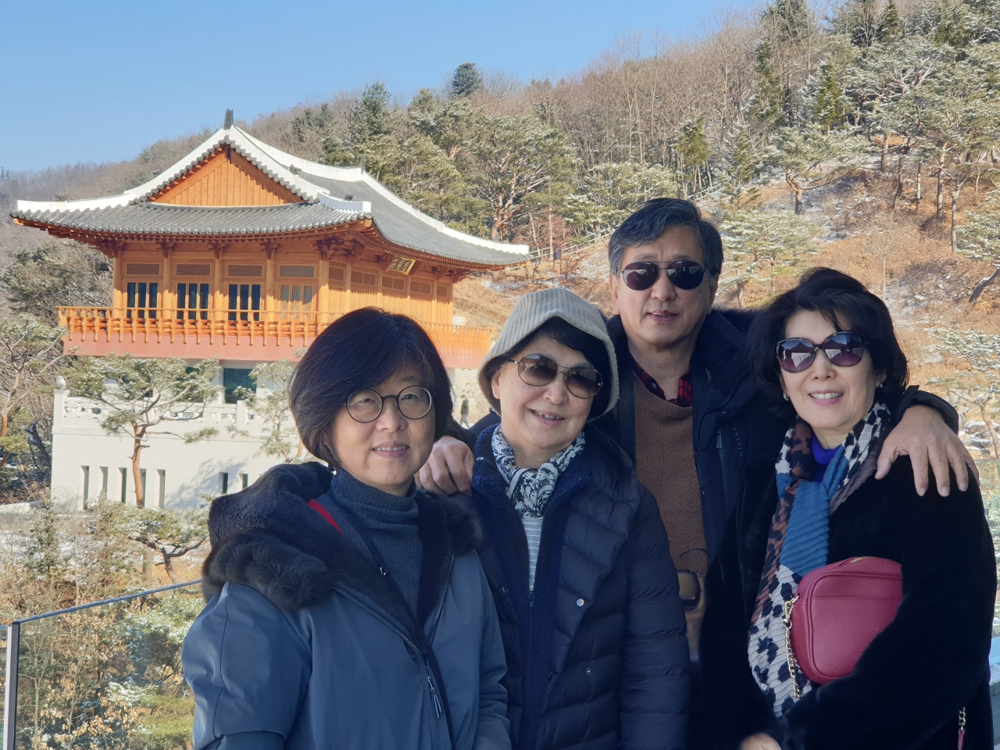
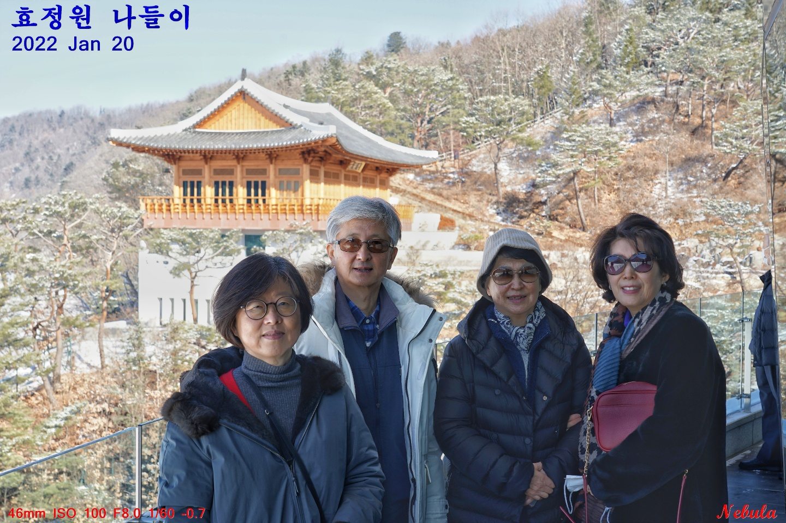
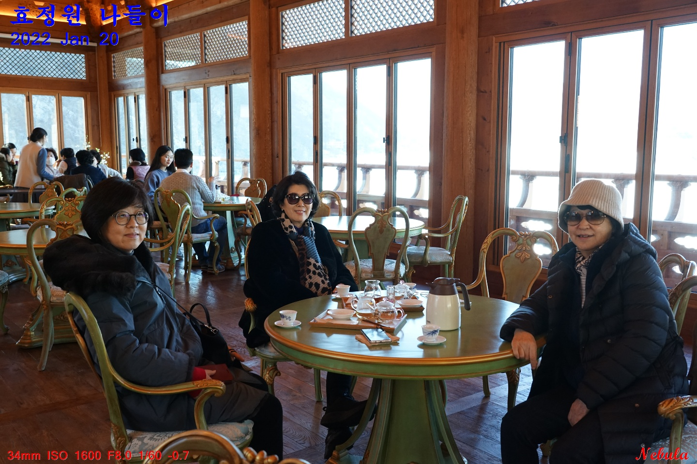
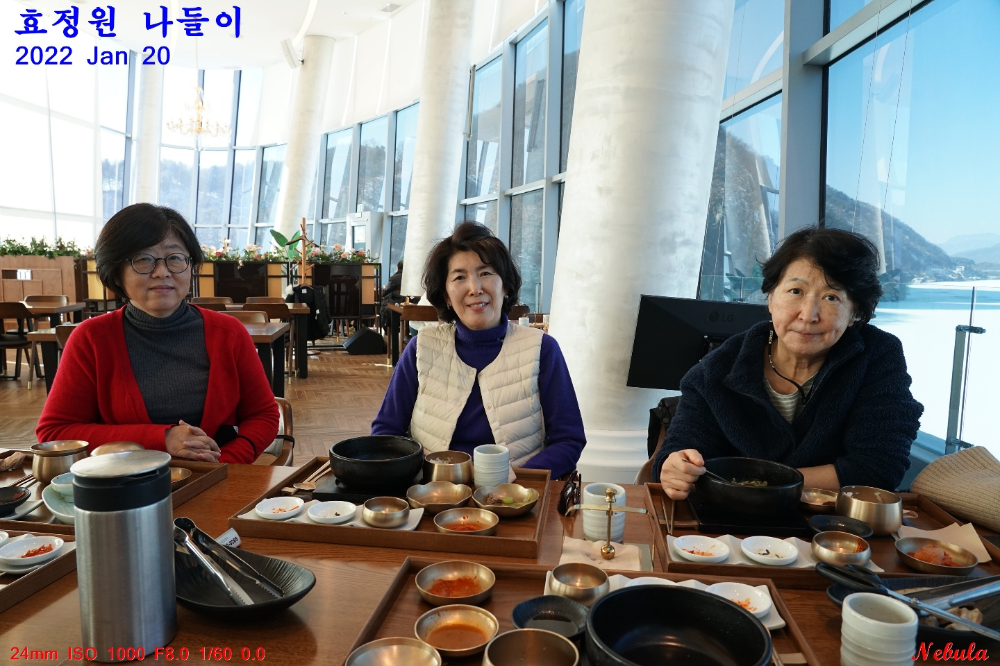
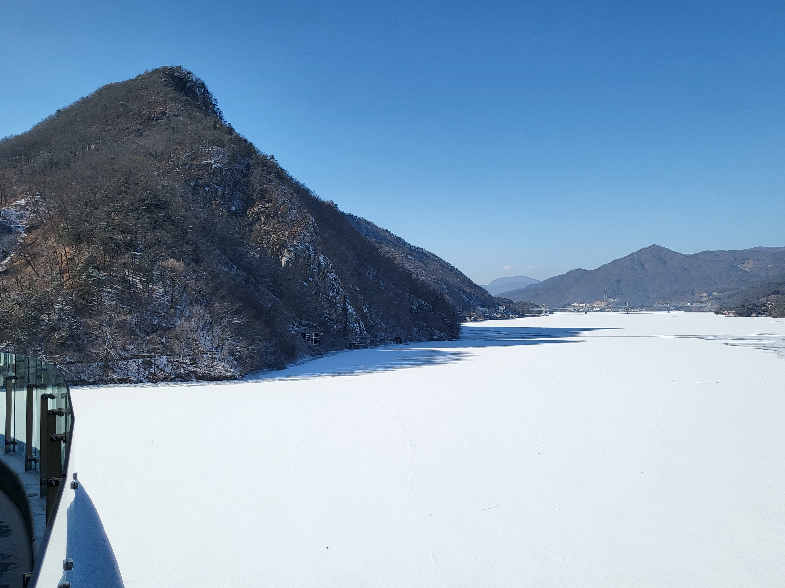
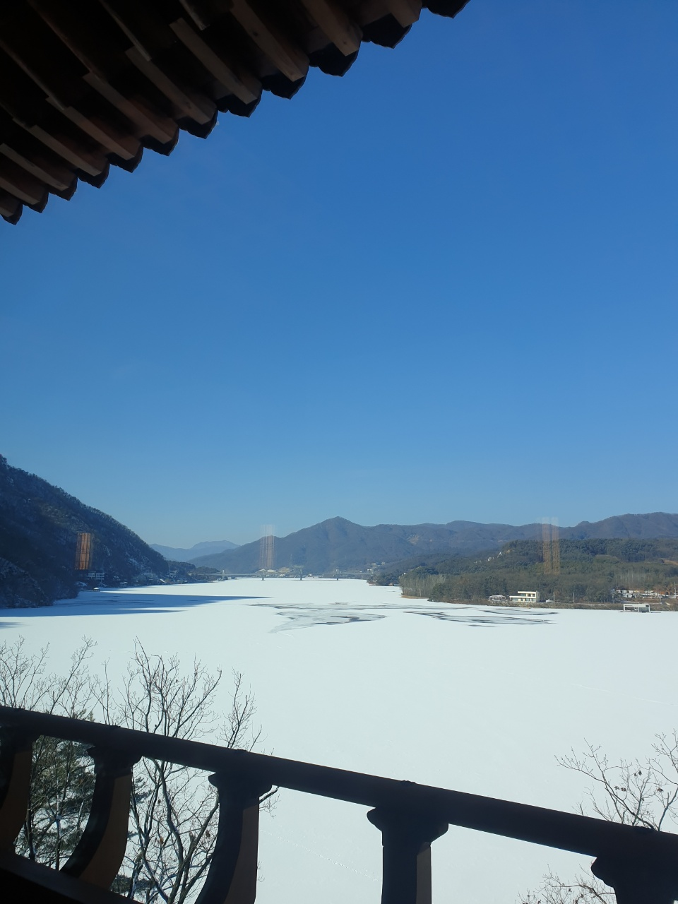

2022-02-07 14:11:42
   효정원(통일교단지-설악면신촌리)에 위치한 전망좋은 한옥카페.  효정연(한식당). 이곳의 서비스는 수준급 되지만 종교집단으로서의 내막을 들여다보면 기성교단과는 다르고 그리 가까이 하고싶지 않은 생각이 든다.   청평호를 내다보는 경치는 이곳(효정원, 매그놀리아, 청심, 또는 부흥이라 불림)이 최상. 얼어붙은 호수는 눈에 덮혀 빙하를 이루고있다.